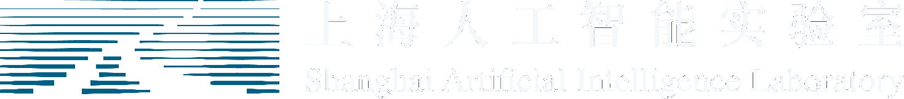

ExoMind: Democratizing Scientific Intelligence via Extended-Mind-Inspired Agentic System
Surpassing Frontier Proprietary Models in Scientific Reasoning and Research with Less Data, Small Model, and Low-cost Training
ExoMind Team

ExoMind is the first extended-mind-inspired agentic system, integrating systematic data engineering, a scientific interaction framework, and a systematic training strategy to advance scientific reasoning and research.
Scientific intelligence evaluation

Scientific intelligence benchmark results
Evaluation models and scientific datasets
Scientific dataset distributions
General intelligence benchmarks
Results
Dataset distributions
Incompressible knowledge probe evaluation

Related scientific intelligence projects
Scientific reasoning models, benchmarks, and multi-agent systems from the broader open ecosystem.